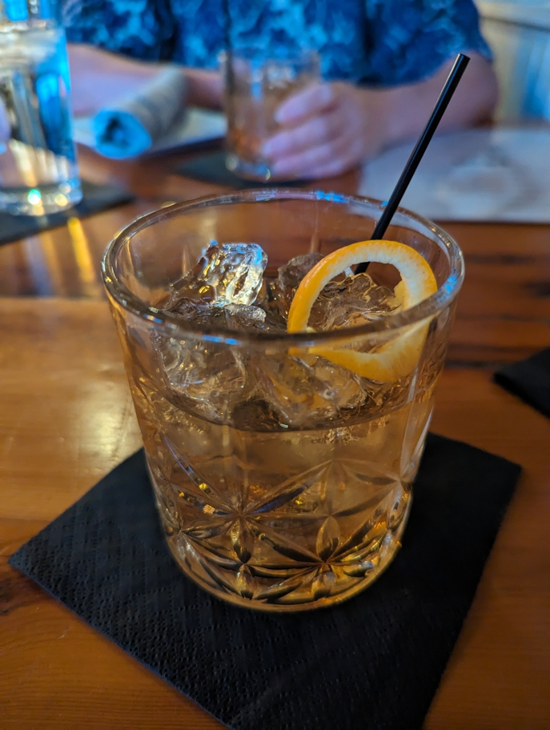

The best cocktail I'd had in quite some time, made with Smooth Ambler Old Scout West Virginia bourbon, in the excellent 1010 Bridge restaurant, which includes many local products in its dishes. If you ever get a chance, go.
Charleston West Virginia